#minecraft:wooden_trapdoors
物品标签 · 62 个已收录成员
标签成员 (62)
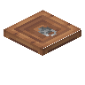
核桃木活板门caupona:walnut_trapdoor
 苍白橡木活板门
苍白橡木活板门minecraft:pale_oak_trapdoor
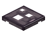
扭曲木活板门architects_palette:twisted_trapdoor
 花梨木活板门
花梨木活板门atmospheric:rosewood_trapdoor
 酸枝木活板门
酸枝木活板门atmospheric:morado_trapdoor
 丝兰木活板门
丝兰木活板门atmospheric:yucca_trapdoor
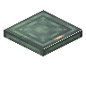
梾木活板门atmospheric:kousa_trapdoor
 白杨木活板门
白杨木活板门atmospheric:aspen_trapdoor
 阴郁木活板门
阴郁木活板门atmospheric:grimwood_trapdoor
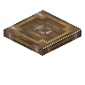
月桂木活板门atmospheric:laurel_trapdoor
 枫木活板门
枫木活板门autumnity:maple_trapdoor
 朽老木活版门
朽老木活版门bountifulfares:hoary_trapdoor
 核桃木活版门
核桃木活版门bountifulfares:walnut_trapdoor
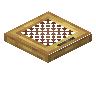
椰木活板门ecologics:coconut_trapdoor
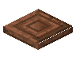
核桃木活板门ecologics:walnut_trapdoor
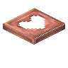
杜鹃木活板门ecologics:azalea_trapdoor
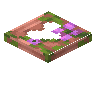
盛开的杜鹃木活板门ecologics:flowering_azalea_trapdoor
 柳木活板门
柳木活板门environmental:willow_trapdoor
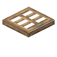
松木活板门environmental:pine_trapdoor
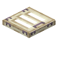
紫藤木活板门environmental:wisteria_trapdoor
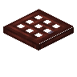
李木活板门environmental:plum_trapdoor
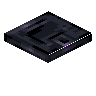
月辉木活板门eternal_starlight:lunar_trapdoor
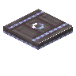
北地木活板门eternal_starlight:northland_trapdoor
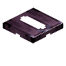
阴榕树木活板门eternal_starlight:banyin_trapdoor
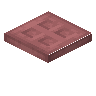
猩红木活板门eternal_starlight:scarlet_trapdoor
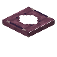
榧树木活板门eternal_starlight:torreya_trapdoor
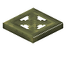
海铃茎活板门eternal_starlight:jinglestem_trapdoor
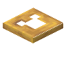
摇篮木活板门eternal_starlight:cradlewood_trapdoor
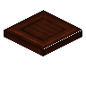
Dark Cherry Trapdoorvinery:dark_cherry_trapdoor
 桃花心木活板门
桃花心木活板门natures_spirit:mahogany_trapdoor
 梭梭木活板门
梭梭木活板门natures_spirit:saxaul_trapdoor
 红杉木活板门
红杉木活板门natures_spirit:redwood_trapdoor
 白杨木活板门
白杨木活板门natures_spirit:aspen_trapdoor
 冷杉木活板门
冷杉木活板门natures_spirit:fir_trapdoor
 柏木活板门
柏木活板门natures_spirit:cypress_trapdoor
 椰木活板门
椰木活板门natures_spirit:coconut_trapdoor
 紫藤木活板门
紫藤木活板门natures_spirit:wisteria_trapdoor
 柳木活板门
柳木活板门natures_spirit:willow_trapdoor
 雪松木活板门
雪松木活板门natures_spirit:cedar_trapdoor
 柳杉木活板门
柳杉木活板门natures_spirit:sugi_trapdoor
 假紫荆木活板门
假紫荆木活板门natures_spirit:palo_verde_trapdoor
 橄榄木活板门
橄榄木活板门natures_spirit:olive_trapdoor
 短叶丝兰木活板门
短叶丝兰木活板门natures_spirit:joshua_trapdoor
 牧豆木活板门
牧豆木活板门natures_spirit:ghaf_trapdoor
 枫木活板门
枫木活板门natures_spirit:maple_trapdoor
 落叶松木活板门
落叶松木活板门natures_spirit:larch_trapdoor
 纸糊活板门
纸糊活板门natures_spirit:paper_trapdoor
 纸糊格活板门
纸糊格活板门natures_spirit:framed_paper_trapdoor
 樱花图案纸糊活板门
樱花图案纸糊活板门natures_spirit:blooming_paper_trapdoor
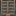
浮木活板门upgrade_aquatic:driftwood_trapdoor
 桑木活板门
桑木活板门upgrade_aquatic:river_trapdoor
 金合欢木活板门
金合欢木活板门minecraft:acacia_trapdoor
 白桦木活板门
白桦木活板门minecraft:birch_trapdoor
 深色橡木活板门
深色橡木活板门minecraft:dark_oak_trapdoor
 丛林木活板门
丛林木活板门minecraft:jungle_trapdoor
 橡木活板门
橡木活板门minecraft:oak_trapdoor
 云杉木活板门
云杉木活板门minecraft:spruce_trapdoor
 绯红木活板门
绯红木活板门minecraft:crimson_trapdoor
 诡异木活板门
诡异木活板门minecraft:warped_trapdoor
 红树木活板门
红树木活板门minecraft:mangrove_trapdoor
 竹活板门
竹活板门minecraft:bamboo_trapdoor
 樱花木活板门
樱花木活板门minecraft:cherry_trapdoor
使用该标签的配方
无